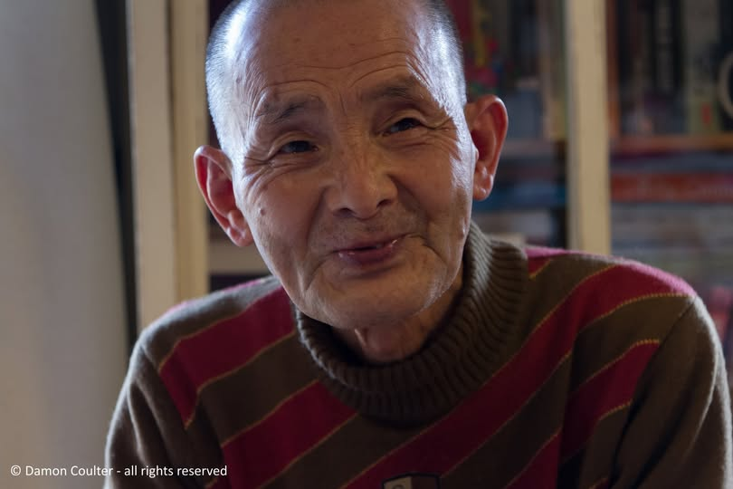

My name is Seishou Koyama.
I'm originally from Shizuoka. It's an area famous for its tea, deep in the Oigawa River, just before the Southern Alps.
I'm 66 years old and this year marks my 16th year of homelessness.
16 years of homelessness is neither long nor short compared to the other homeless around me, it's average, even though everyone seems to say that sixteen years is a long time.
Finding a place in Shinjuku
Before that, I used to live in Nakano but a lot happened when I was living there... and then I moved to Shinjuku. I chose Shinjuku because it was close to Nakano and I guessed I would somehow make it if I went to Shinjuku.
When I went there, there were many people like me, sleeping inside the station at night and around the station during the day. At first, I didn't know where to sleep in Shinjuku. I just picked a place that looked decent. But one day, while I was sleeping near the ticket gate of the Keio line, in the middle of the night, I had urine poured over my face. The person who did it said to me, "Who gave you permission to sleep here?" That place must have been someone's territory which I didn't know about.
After that, I asked other homeless people where I could go and they told me about a good place somewhere else within the station. I have been sleeping there, in the same place, for a long time now.
There used to be so many homeless people around Tokyo Station too, but now they are banned.
Also, last December, around Christmas time, someone whom I was quite close with froze to death in front of a koban at Tokyo Station.
At least in Shinjuku I can sleep inside the station.
A day in his life
About my routine, I generally get up at 3:30 in the morning, summer and winter, all year round. The thing is that the shutters in the basement open at 3:30, and since I sleep near the shutters it becomes hard for me to sleep beyond that time.
At the latest, I get woken up at 4:00 am and kicked out from my sleeping space by the guards. Then I wash my face in the bathroom and eat at a nearby place like Matsuya, a beef bowl restaurant. I eat every morning.
The first train of the day leaves Shinjuku station around 4:30, so I get on it to go to Tokyo Station. Every day I go to Tokyo Station where there are homeless people just like me sleeping in the waiting room, and I sleep there for about two hours before getting back on the train. If the weather is good, I sometimes get off the train on the way and stop by the Imperial Palace or a big park to sleep.
On those days when I get asked to part time as a line stander, I will not head to Tokyo station but to the department store. This type of requests comes mostly from Chinese people asking me to line up in their stead at a store in the morning to buy new products, such as electronics goods or women's cosmetics. I'll queue from about 5 am until the store opens at 10:00 a.m. I get paid 3,000 yen for that job which I get twice a month at most.
Chinese people would come find me when I'm sleeping, and say something like "Tomorrow, there is a part-time job to queue at the department store".
But these days, there are fewer and fewer requests for part-time jobs like this.
Apart from this kind of jobs, I help someone at Tokyo station who picks up books, magazines, manga, etc from the bins to resell them at the station. That gets me 30 yen per book I collect.
For meals other than my 4:00 am meal around Shinjuku station which I pay for with my own money, we have support from groups such as soup kitchens. Besides Shinjuku, there are some in Ikebukuro and Yotsuya. Yoyogi Park has the most. Homeless from different parts of Tokyo will walk there. I write down on a notepad on which days of the week support is available and where. We also tell each other.
I come back to Shinjuku around 22:15. I usually make my sleeping space around 23:00 but, lately, the guards have been less noisy, so I sometimes sleep around 22:30 - although I can't sleep right away if there are too many passerby.
Since I go to "bed" around 23:00 and wake up at 3:30 am every day, I feel like I only get about 3 hours of deep sleep so I do feel sleep-deprived.
If I don't take a nap in the morning like I do in the waiting room of Ueno station or out in the park, physically it is difficult.
From time to time I will stay at a cheap capsule hotel and it feels so different in the morning. I can sleep soundly and feel refreshed when I wake up in the morning. Now, however, the cheap capsule hotels have disappeared from Shinjuku.
The lack of quality sleep is the biggest problem in my life right now. I cannot sleep deeply for a long time. Although the fatigue I'm feeling does not seem to interfere with my physical ability, I am always sleepy.
Childhood in a temple family
My name is Seishou Koyama. I was born and raised in Shizuoka and was the youngest of 5 children. I had 2 brothers and 2 sisters.
My family's home was actually a Buddhist temple. My father was a monk and my second brother was the heir to the temple.
Rural temples live on annual fees from danka (houses that support the temple) and then offerings at funerals and memorial services. Without about 500 of these supporting danka, we would be unprofitable and unable to maintain the temple. My parents' temple had about 200 parishioners which wasn't enough to survive, so, as many other temples in the countryside do, we started operating as a kindergarten as a kind of side business. My mother was working as a kindergarten teacher.
The family environment in which I grew up was very bad though. We were a really strange family. None of us including my siblings were allowed to eat together. I don't have any memories of us taking family trips together at all. Simply put, I don't remember growing up feeling love from my parents. And it wasn't just with the kids, my parents were not very close to one another either. My father was very strict. He was a jerk. My mother was also very strict which made things difficult. She was tougher on me than my father.
From Shizuoka to Tokyo
I was 18 years old when I moved out of my hometown of Shizuoka to go to Tokyo. Since my family's home in Shizuoka was a temple, I enrolled in Komazawa University at the Faculty of Buddhism in Tokyo.
When I arrived in the capital, I started living at my distant relative's place, an aunt (already practically an elderly lady), in Nakano. I was single at the time I arrived in Tokyo but I got married with a classmate in college.
I quit college halfway through and then went back to my parent's house with my wife.
Returning to my hometown in Shizuoka after living in Tokyo was tough, I didn't enjoy it in the slightest. I didn't get along with my family. I had also forgotten how temple life could be strict and rigorous. Life was also very busy and tough with the main temple duties and the kindergarten.
In order to provide for my family and support them, I left for Tokyo alone to find a job. My wife remained in Shizuoka.
Little did I know it would be the last time we would be living together. My wife died of a stroke during that time when we were living apart.
Work, family, and becoming homeless
In Tokyo, I started working at Takashimaya and was living in a room at my aunt's place, on the second floor. At first, I did not have to pay rent. However, it was a very old house which needed to be rebuilt and, since we were living together, I was required to provide some financial support for that. As a result, our relationship deteriorated.
My aunt was 87 years old at the time, and although the next generation now lives in the renovated house, we remain estranged.
I became homeless immediately after leaving that place in Nakano. I actually hid my belongings there for a while in my aunt's storage room at her house. At night I would go there to change my clothes, but I was seen doing so. Then one day, there was a piece of paper attached to my belongings. The paper said, "If you wander around this area, we will call the police". Perhaps the neighbors told my relatives.
I do not hold a grudge against them and didn't think anything of how my relatives treated me back then. I wasn't shocked or anything.
After that incident though, I brought my belongings to Shinjuku and never went back.
Some time after, my father passed away so I returned to Shizuoka for my father's funeral. I met my relatives at that time.
I don't know if my relatives knew I was homeless then. Neither did they ask me anything about me or my life in the capital.
After returning to the streets of Tokyo, I started working at McDonald's part-time. I think my co-workers there probably could sense that I was living this kind of homeless life.
I worked at McDonald's for a total of 11 years and, as I mentioned before, I now work collecting books and magazines from bins at Tokyo station or as a line stander.
A family left behind
The temple is still in Shizuoka but I think my family is no longer there to run it and a stranger has taken over. I tried calling once before, but the number was not in use and I couldn't get through. When I gave that phone call, I guess I didn't mean anything deeper than that, I was just trying to see what kind of condition my family was in. It was two summers ago when I made the call. I still remember the date to this day; it was July 23. It wasn't a special day, but I don't know why, I remember that date. I have no idea where all of my siblings live now.
The graves of my father and those of other relatives are still in the temple. I know where the graves are. However, I do not know where the living are, where my brother and all my brothers and sisters might be now...and I have no desire to know.
Truth be told, I do not miss them. My brothers and sisters. I don't want to look them up on the Internet, and I don't want them to look me up.
I just don't want to get involved with them. Not at all. I think all my brothers and sisters probably don't want to see each other either. After all, I grew up in that kind of family environment, with my siblings not getting along with each other since I was little, and my parents not getting along with each other either.
We really were a strange family.
I would like to go visit my parents' home again one day. It's in Kanaya, Shizuoka, near the Oigawa River.
Buddhism and a daily ritual
As I mentioned before, I was raised in a Buddhist temple. My father was a monk.
I even went to the Faculty of Buddhism at Komazawa University in Tokyo.
Even though I grew up in a family deprived of love and had a quite difficult relationship with them, Buddhism is still very important to me. Even to this day. I always carry a book of Buddhism sutras and read them every morning and every evening.
The book might look old but I bought it only two years ago. My family's temple was a Zen temple, and its daihonzan - or main temple - is in Tsurumi, Yokohama, so that's where I go to pay my first temple visit of the year, every single year. I bought the book there, alongside the bell I always carry with me.
The bell sounds like a bear-repellent bell (laughter).
Inside the book, there are sutras written in very small characters. I've memorized them all and read them every morning while ringing the bell.
Every time, I will read the book from beginning to end. I've memorized it too.
When I manage to read my sutra book in its entirety, it feels like the day, the whole day, will go off without a hitch.
So I read it immediately after waking up in the morning and before going to bed at night.
I read it out loud, as loudly as possible, really. Of course, I try to find a place where there are no people. If no one is around, I sometimes do it on the train, still ringing the bell.
I've been invited to go to church, but I've never been. I'm quite curious and interested in going to church at some point.
Reading the sutras relaxes me. I feel different when I read the sutras. Sometimes I forget to read the sutras, and then I feel strange and restless. I worry that something bad will happen. So, when I realize that I have forgotten, I try to read the sutra in my mind on the spot.
People and connection
Apart from the sutras, I don't like reading very much. I don't like to sit and read without moving. I prefer to be constantly moving.
During the homeless patrols I am very chatty. I also have quite a few opportunities to talk to other people. For example, when I am in the basement of Shinjuku station, fellow homeless people from the other side of the station come talk to me.
Talking with everyone is my favorite thing. I like talking with people because I feel lonely.
When someone is in trouble, I can't leave them alone. I feel most happy after helping people who need help. I like lending a hand to the Tokyo Spring Homeless Patrol and other such activities. For example, when I see a blind person, I always try to talk to him or her. I don't speak English, but if a foreigner is lost and in trouble, I use my hands and body to communicate with them. I have the most fun after that.
My life hasn't always been easy but people often say I look cheerful and happy and do not show sadness. But there are people with whom I don't get along. There are also many foods I like and many foods I dislike. Similarly, I have distinct likes and dislikes about some people. We make a big distinction between people we like and people we don't like. It's easier that way.
Freedom, housing, and the street
Going back to my life as a homeless person, at first I felt that this kind of life was kind of nice in that I had freedom.
As long as I have enough energy to sleep, I can't give up the freedom of my current lifestyle. However, some homeless people have been evicted because of development construction projects in various places.
I sometimes hear from other homeless people that renting a room to live in is stressful too. That may be a matter of getting used to it, though.
Truth be told, I'm scared of renting a room and be alone
Welfare, work, and identification
Very few people end up on the street by choice.
People find themselves on the streets after being laid off because their jobs did not work out. Others left home because of bad marital or parent-child relationships. Some have worked for so-called "black businesses", which are exploitative companies with illegal practices in regards to labor law.
I have never gone to the ward office for welfare before. The reason why I do not apply for welfare is because I have heard from people who have experienced it that it is very strict. They do a background check on your possessions and belongings in various ways, and I get the feeling that it would be impossible for me to receive it anyway. I think that the process is troublesome. They also seem to thoroughly look into your family members and family situation.
If the process were simpler I would apply for it. And when you are over 60 years old, there are not many landlords who are willing to rent you a room. The reason is that they don't want you to die alone.
The biggest problem, however, is that I can't have an ID card made because I don't have an address.
A long time ago, when I moved from Shizuoka to Nakano, I changed my certificate of residence accordingly. Then, when I left my aunt's place in Nakano, I also submitted a notice of change of address to the Nakano Ward Office. I tried to move my certificate of residence back to Shizuoka at one point, but it has remained the same since then. I don't think I submitted a notification of moving in. My registered domicile is then by default my birthplace, Shizuoka.
When I look for a job, I am asked, "Do you have an ID card?". As I don't have any ID, they often reject me, saying, "That will not be possible with our company". Right now I have neither a driver's license nor an insurance card.
Health, pension, and support
I've had health issues in the past though. When I remove my mask, people notice that I'm missing most of my teeth. I fell due to my own carelessness. I was going to cross a crosswalk, and I tripped on a step and fell on my face. That's when I broke some of my teeth. I was rushed to the hospital by ambulance and had surgery on my gums. That accident happened about 30 years ago. I've had about four surgeries since, and each time my gums were damaged further. As a result, I lost almost all of my teeth when I was homeless. It doesn't hurt at all, but it is inconvenient when I eat. I try not to kiss anyone (laughs).
I used to get a pension, but my pension certificate got stolen from my belongings. I was told to contact the pension office and that they could do something about it but as it is, I have done nothing. I have not received any money after that incident. I have not been to the pension office either.
I used to have a bank account with Mizuho Bank, but I haven't used it for decades so I don't think my account is still open. I asked them how to proceed to access it before, but my balance may not even be 100,000 yen.
I have been to the ward office to seek assistance before. However, at that time, it was not because I was seeking welfare or anything, but because I could use the shower for 20 minutes (the order in which you can shower is decided by lottery). I could also do my laundry there, and, if I had any problems, they would listen to me. Actually, there is a space where you can do laundry at an NGO called "Tomarigi" on the grounds of the ward office.
The pandemic and public assistance
When the 100,000 yen of relief were handed during the corona outbreak, many homeless people were able to receive the money by asking an NPO to lend them an address. The NPO also seemed to be able to set up bank accounts for them. For that purpose.
As a result of getting a temporary address and a bank account, some homeless could get welfare and rent a room to live in.
The number of homeless people in Shinjuku has subsequently decreased considerably.
I did not receive the 100,000 yen myself.
I don't refrain from applying for welfare because of shame or embarrassment, but because the process of actually receiving welfare is a hassle, and I find that to be the hardest part of it.
And to tell you the truth, I have given up on welfare and applying for public assistance because I will not live long enough.